2015年北京市中考化学真题 · 选择题 第16、17、18、19、20题 · 对应解析
16．下列实验方法一定能达到实验目的的是（ ）
选项 | 实验目的 | 实验方法 |
A | 检验一瓶气体是否为 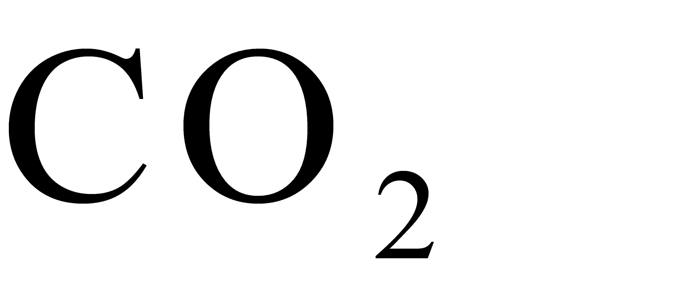 | 将燃着的木条伸入瓶中 |
B | 鉴别和 | 分别点燃，在火焰上方罩一干冷烧杯 |
C | 鉴别石灰水和溶液 | 加入适量的稀盐酸 |
D | 比较Zn、Cu、Ag的金属活动性 | 将Zn和Ag分别放入溶液中 |
【答案】D
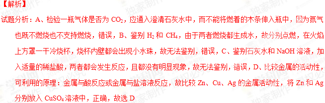
考点：物质的检验、鉴别以及金属活动性的探究17．a，b两种物质的溶解度曲线如下图所示．下列说法不正确的是（ ）
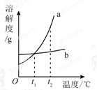
A．将
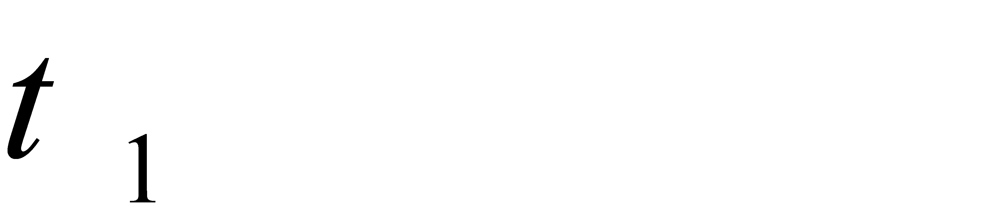
℃时b的饱和溶液加水可变为不饱和溶液B．将
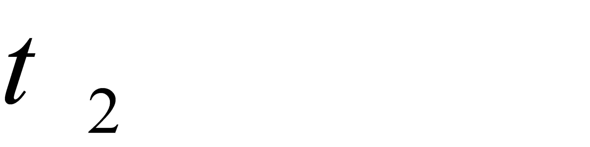
℃时a的饱和溶液降温至℃，溶液质量不变C．℃时，两种物质的饱和溶液中溶质质量分数ab
D．将℃时a、b的饱和溶液分别降温至℃，两溶液的溶质质量分数相等
【答案】B
【解析】
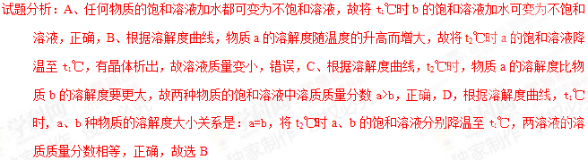
考点：溶解度曲线的意义18．右图所示实验中，①、④为用紫色石蕊溶液润湿的棉球，②、③为用石蕊溶液染成紫色的干燥棉球．下列能说明密度大于空气且能与水反应的现象是（ ）
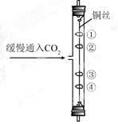
A．①变红，③不变红
B．④变红，③不变红
C．①、④变红，②、③不变红
D．④比①先变红，②、③不变红
【答案】D
考点：CO2的性质
19．纳米材料具有特殊的性质和功能．纳米二氧化钛
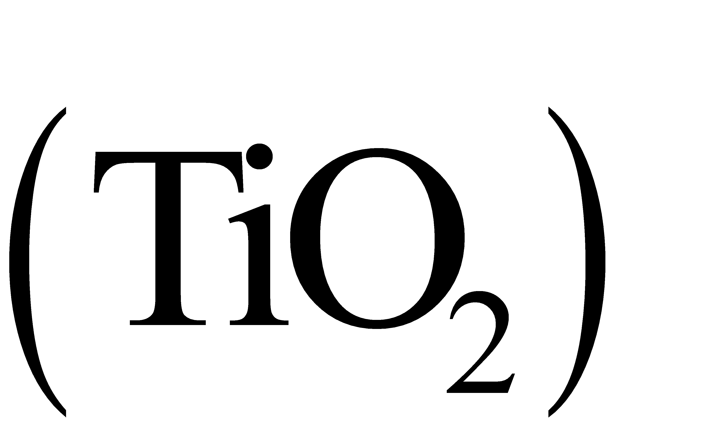
参与的光催化反应可使吸附在其表面的甲醛等物质被氧化，降低空气中有害物质的浓度．正钛酸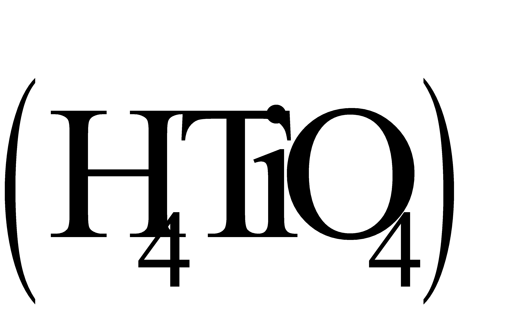
在一定条件下分解失水可制得纳米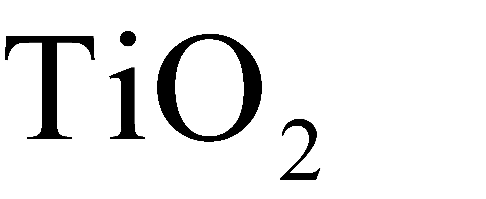
.下列说法不正确的是（ ）A．甲醛对人体健康有害
B．纳米添加到墙面涂料中，可消除甲醛
C．纳米与普通的的性质、功能完全相同
D．制备纳米的反应：
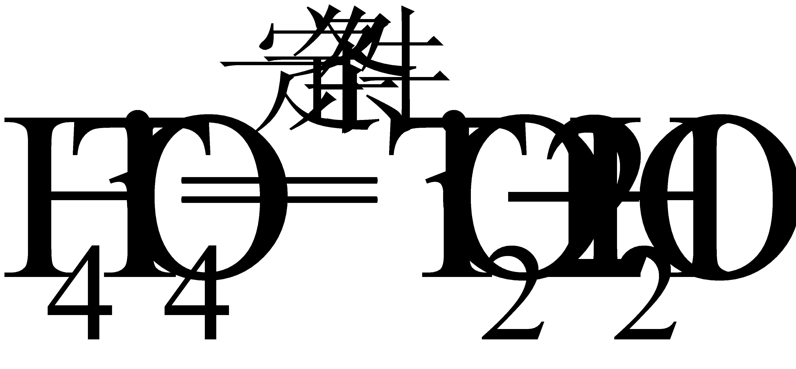
【答案】C
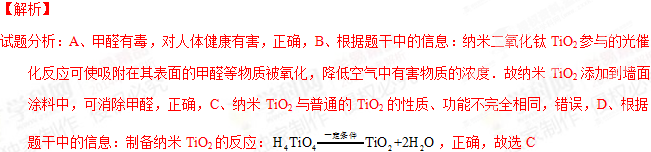
考点：TiO2的性质及用途20．已知：
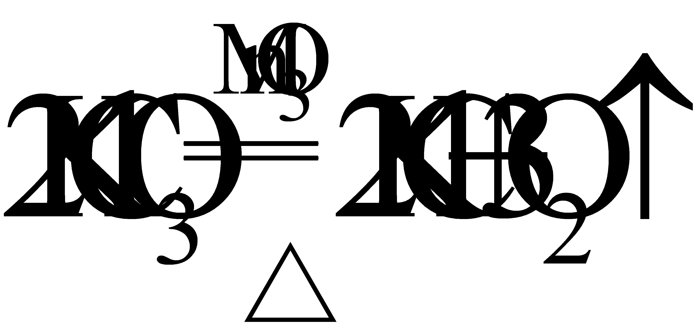
，右图表示一定质量的和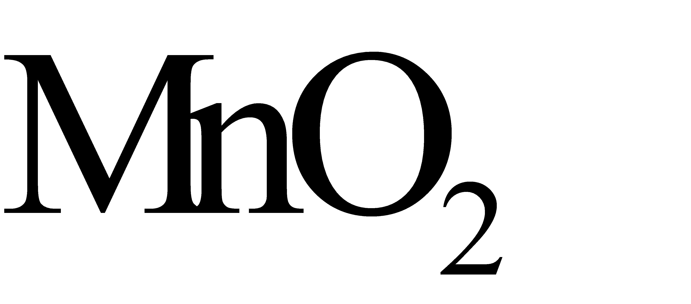
固体混合物受热过程中，某变量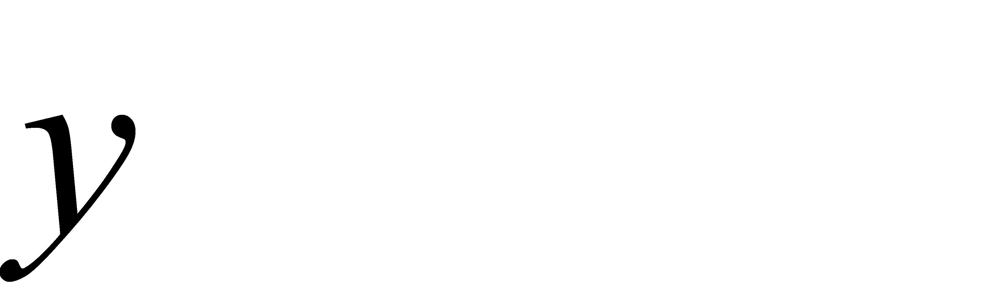
随时间的变化趋势，纵坐标表示的是（ ）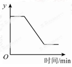
A．固体中氧元素的质量B．生成的质量
C．固体中的质量D．固体中钾元素的质量分数
【答案】A
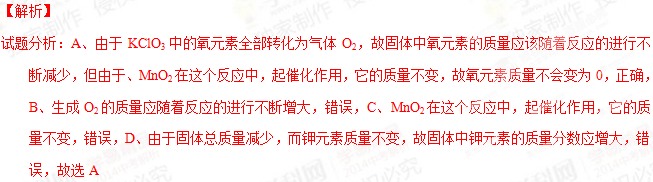
考点：化学反应中各物质量的变化，催化剂的特点第二部分 非选择题（共60分）
〖生活现象解释〗
下面连环画记录了雯雯参观中国地质博物馆的一天．
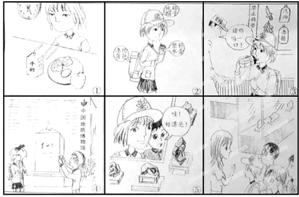
请据图回答21－25题